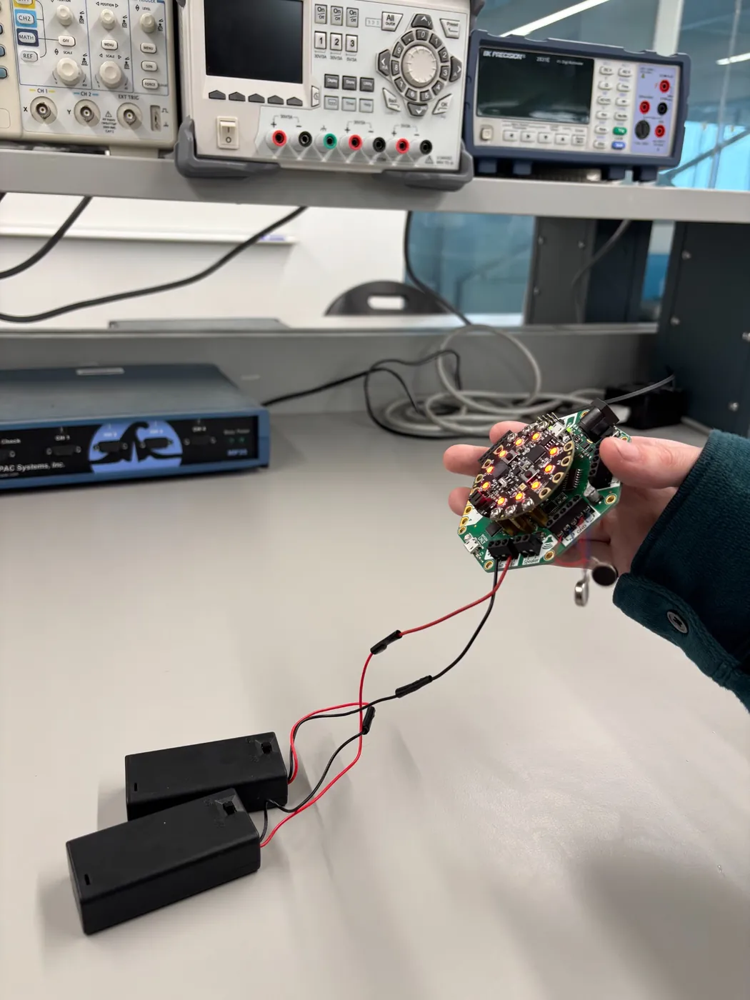
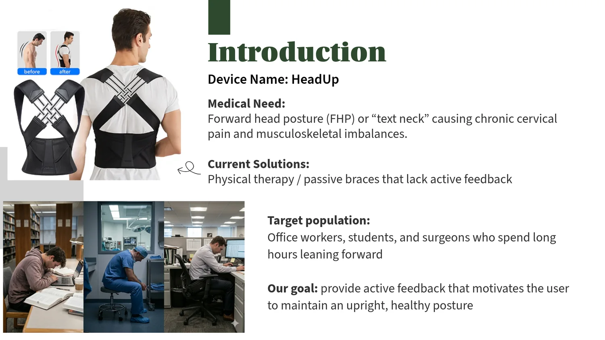
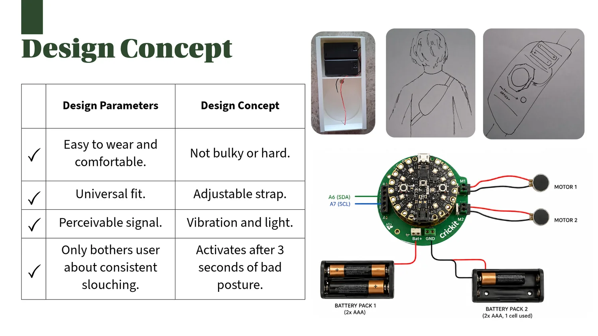
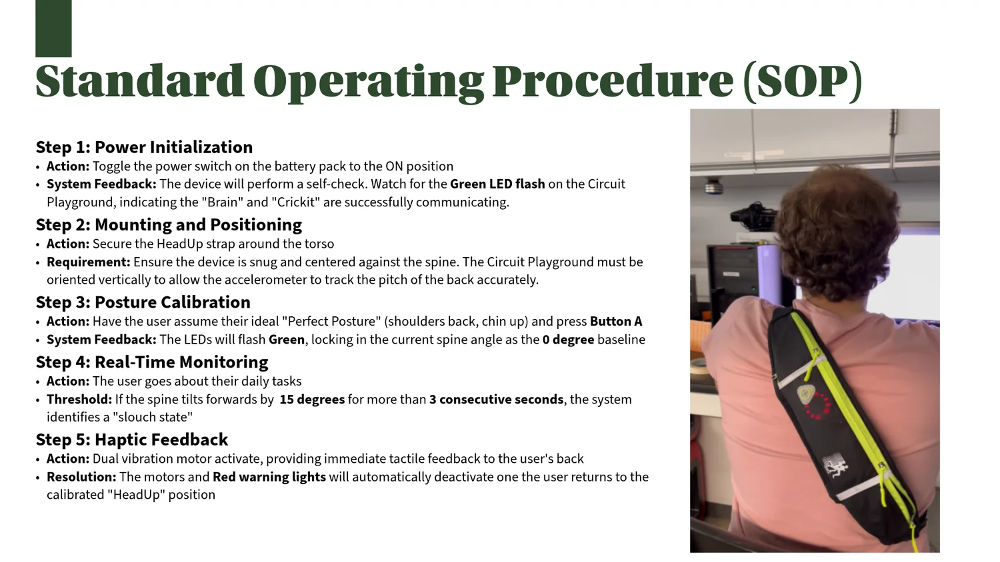
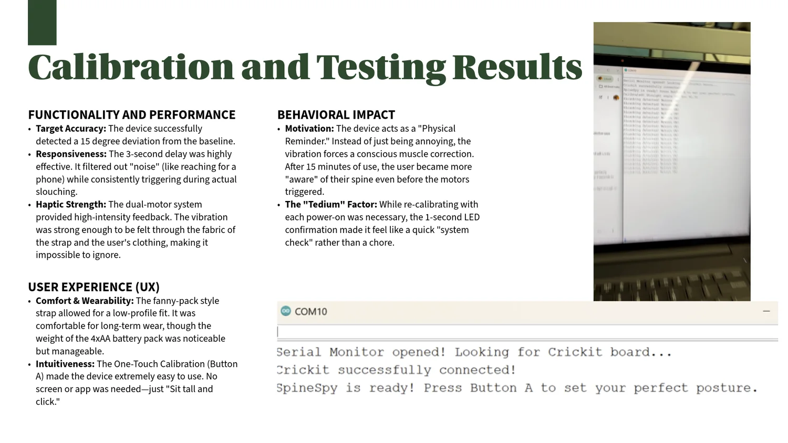
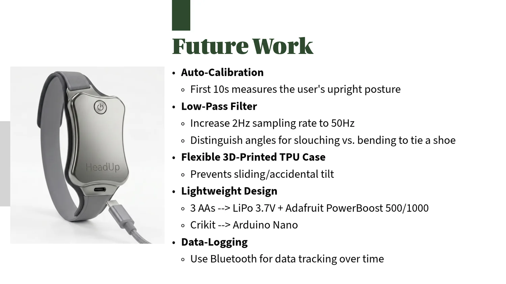

Medical need
Forward-head posture and sustained device use can contribute to neck strain and musculoskeletal discomfort.
Bioinstrumentation
Posture-feedback wearable that calibrates to a user's upright posture and provides haptic/visual feedback after sustained slouching.

Forward-head posture and sustained device use can contribute to neck strain and musculoskeletal discomfort.
An adjustable torso strap uses vibration and light as perceivable feedback while keeping the device low-profile.
The prototype identifies a slouch state after a 15° forward deviation persists for more than 3 consecutive seconds.
Button A stores the user's upright posture as the 0° baseline before real-time monitoring begins.
The team evaluated threshold detection, the 3-second delay, vibration strength, comfort, and one-touch calibration.
Auto-calibration, higher-rate filtering, flexible enclosure design, lighter power, and Bluetooth data logging.
Project archive
This material stays inside the case study so the main portfolio pages remain clean.





